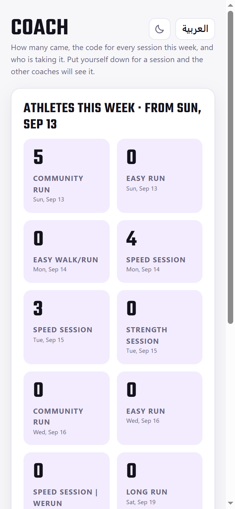
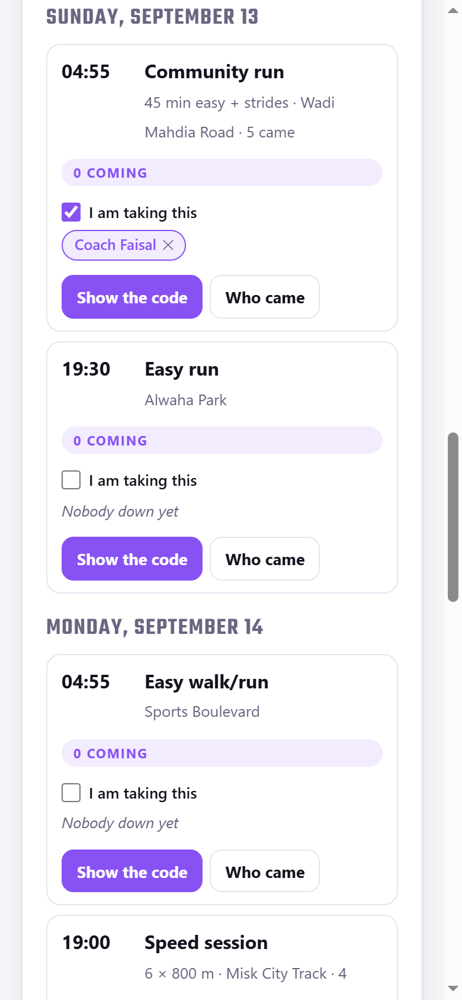
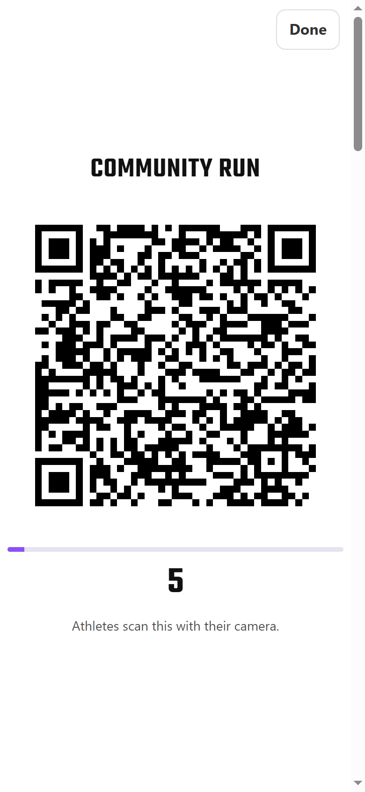
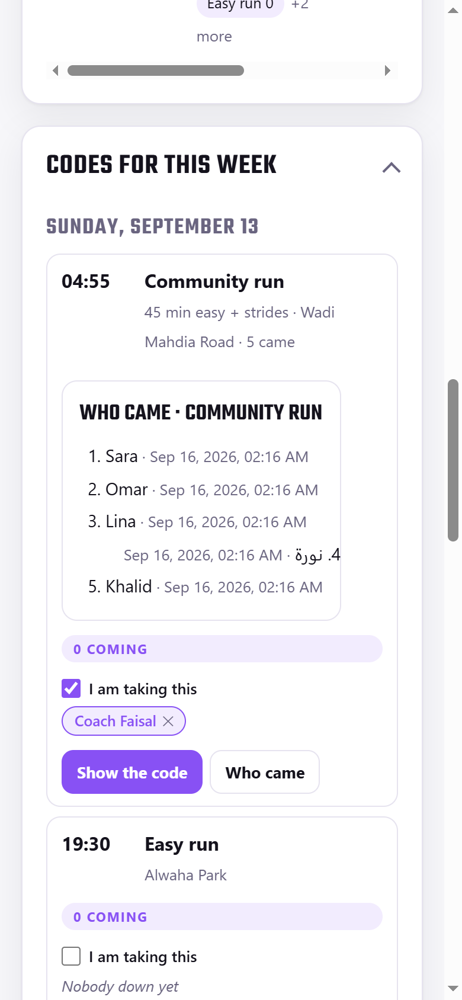
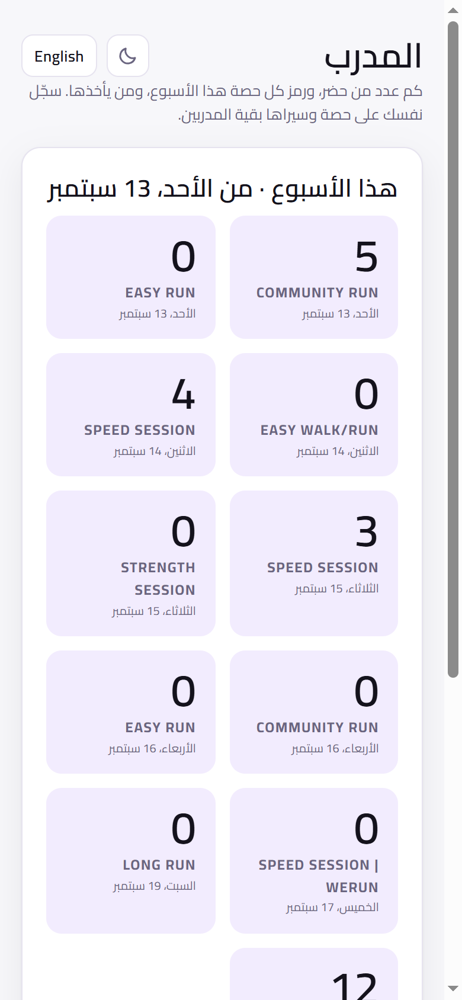
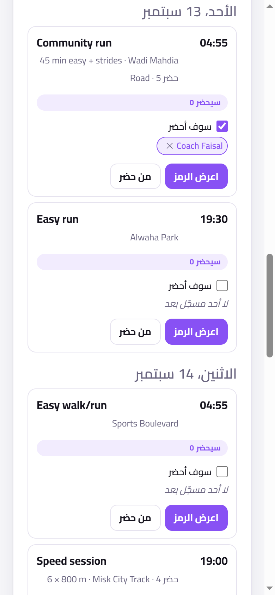
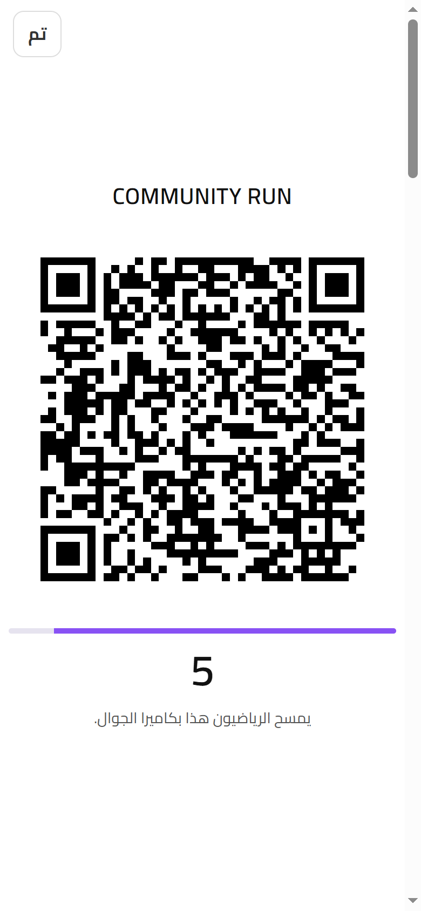
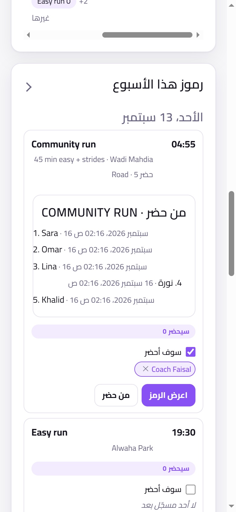

1 · Signing in
- Open weruncoaching.pages.dev/coach and sign in with your own club account, the same email and password as the app. Only coaches and leaders get in.
- From the app: Me → Coaching → Show this week's codes.
- Or the club password is only the way back if an account is lost.
- Same toggles as the app: العربية and the moon.
2 · What is on the screen
- Athletes this week: the head count for each session, and every week before it.
- Codes for this week: every session, day by day. The purple badge is how many tapped I'm coming; came is how many scanned.
- I am taking this: tick it and your name goes on the session for the other coaches. Nobody down yet means it still needs someone. The ✕ takes your name off.
3 · At the track
- Tap Show the code and hold the phone up. Athletes scan it from the app or with their camera.
- The code refreshes every 30 seconds; the bar under it is the countdown. Keep the screen up. Do not send a photo of it, because it expires.
- The big number is how many have scanned so far, live. Done closes it.
- Who came lists the names and the time each one checked in.
If an admin turns on the location check, the code shows only within 300 m of the meeting point. Allow location when the phone asks.
This screen edits nothing. Publishing, moving a session and voiding a check-in are on /admin, for admins.

Athletes this week

Codes · coming · who is taking it

The code · 30s

Who came
١ · تسجيل الدخول
- افتح weruncoaching.pages.dev/coach وسجّل الدخول بحسابك في النادي، نفس بريد وكلمة مرور التطبيق. لا يدخل إلا المدربون والقادة.
- من التطبيق: حسابي ← التدريب ← اعرض رموز هذا الأسبوع.
- خانة أو كلمة مرور النادي للعودة فقط إذا ضاع حساب.
- نفس مفتاحي التطبيق: English والقمر.
٢ · ما الذي في الشاشة
- هذا الأسبوع: عدد الحضور لكل حصة، وتحته كل أسبوع قبله.
- رموز هذا الأسبوع: كل الحصص يومًا بيوم. الشارة البنفسجية عدد من ضغط سجّلني، وحضر عدد من مسح الرمز.
- سوف أحضر: علّمها فيظهر اسمك على الحصة لبقية المدربين. لا أحد مسجّل بعد يعني أنها تحتاج مدربًا. علامة ✕ تزيل اسمك.
٣ · في المضمار
- اضغط اعرض الرمز وارفع الجوال. يمسحه العدّاؤون من التطبيق أو بكاميرا الجوال.
- الرمز يتجدّد كل ٣٠ ثانية، والشريط تحته هو العدّاد. أبقِ الشاشة مرفوعة، ولا ترسل صورة له لأنها تنتهي صلاحيتها.
- الرقم الكبير عدد من سجّل حتى اللحظة، مباشرة. تم يغلقه.
- من حضر يعرض الأسماء ووقت تسجيل كل واحد.
إذا شغّل المشرف شرط الموقع، لا يظهر الرمز إلا على بُعد ٣٠٠ م من مكان اللقاء. اسمح للجوال بالموقع عندما يطلبه.
هذه الشاشة لا تعدّل شيئًا. نشر التمارين ونقل الحصص وإلغاء تسجيل حضور كلها في /admin للمشرفين.

العدّاؤون هذا الأسبوع

الرموز · سيحضر · من يأخذ الحصة

الرمز · ٣٠ ثانية

من حضر